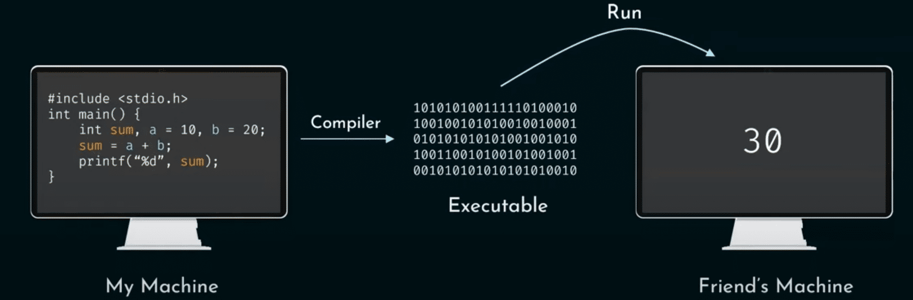

SolutionsHow it worksPrices
Programmering
Processen med at udarbejde et instruerende
program til en enhed

Computerens sprog
Computere forstår kun 0'ere og 1'ere - Altså binær
Computere forstår kun 0'ere og 1'ere - Altså binær
Compiler
ProgrammeringssprogHvert sprog har også en egenskab kendt som kraft eller
niveau
 Static
StaticDatatyper defineres under kompileringstiden og kan ikke ændres under kørsel
 DynamicUdfører typekontrol under kørsel, og tillader datatyper at
ændre gennem udførelsen
DynamicUdfører typekontrol under kørsel, og tillader datatyper at
ændre gennem udførelsen Low-leveltættere på maskine-kode, hvilket giver mere kontrol og
effektivitet, men er sværere at programmere.
Low-leveltættere på maskine-kode, hvilket giver mere kontrol og
effektivitet, men er sværere at programmere. High-levelMere læsbare og abstraheret fra hardware, hvilket gør dem
nemmere at programmere, men mindre effektive
High-levelMere læsbare og abstraheret fra hardware, hvilket gør dem
nemmere at programmere, men mindre effektive SyntaksRegler der kontrollerer, og definerer strukturen på sproget -
Ligesom grammatiske regler i dagligdags sprog
SyntaksRegler der kontrollerer, og definerer strukturen på sproget -
Ligesom grammatiske regler i dagligdags sprog
github.com
https://www.simplilearn.com/tutorials/artificial-intelligence-tutorial/types-of-artificial-intelligence
https://www.simplilearn.com/advantages-and-disadvantages-of-artificial-intelligence-article